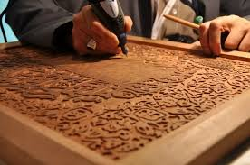
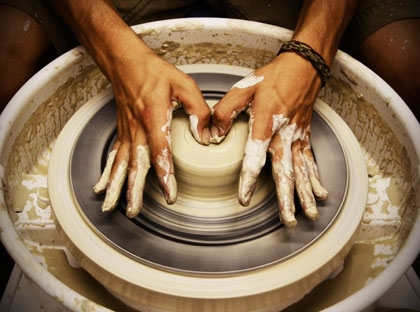
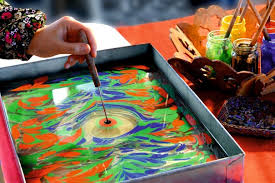

Yerinde İzle
Ustalardan özel eğitim videoları ile zanaatı öğrenin
Zanaatı Ustalardan Öğrenin
Türkiye'nin dört bir yanından geleneksel zanaatları icra eden ustalarımızın eğitim videolarına buradan ulaşabilirsiniz. Bu videolar sayesinde yüzyıllardır süregelen zanaat tekniklerini kendi evinizde öğrenebilir, ustaların deneyimlerinden faydalanabilirsiniz. Zanaat kültürünü yaşatmak ve gelecek nesillere aktarmak için bu değerli bilgileri paylaşıyoruz.



Öne Çıkan Videolar
Ahşap Oyma Teknikleri
Usta Mehmet Bey'den ahşap oyma sanatının incelikleri
Geleneksel Seramik Yapımı
Seramik ustası Ayşe Hanım ile çömlek yapımı
Ebru Sanatı Başlangıç
Ebru sanatçısı Zeynep Hanım ile temel teknikler